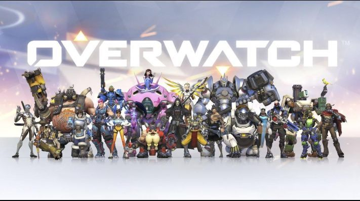
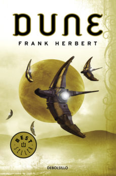
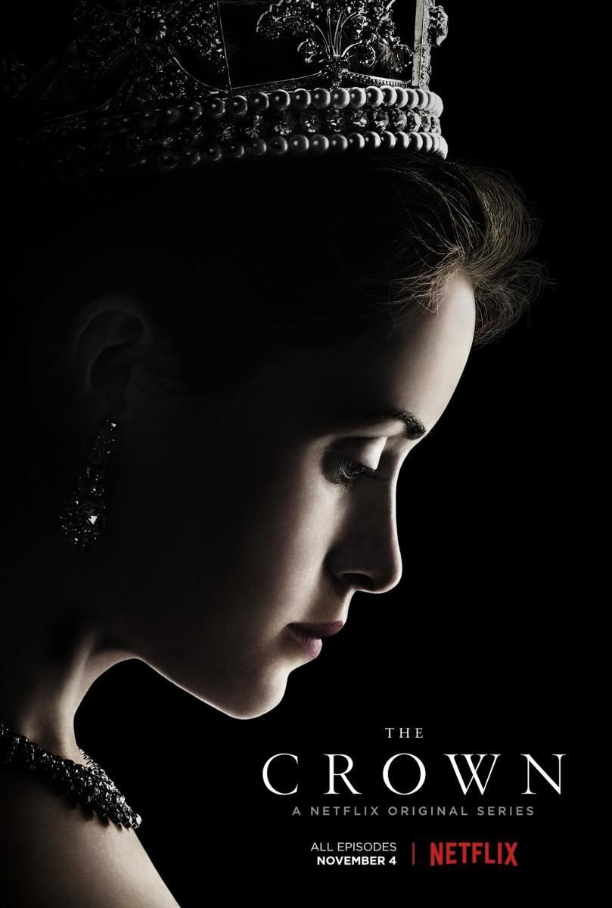
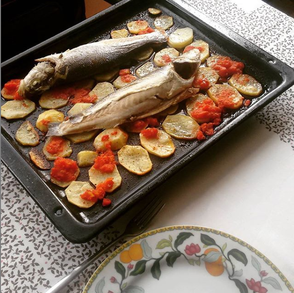

⌛ Que hago:
Estoy jugando: Overwatch
Después de pasarme unos cuantos juegos con historia, me estoy echando unos OWs para desconectar, y ahora que es verano me mola jugar este tipo de juegos aunque tengo pendiente el FF XV, aunque no sé si me lo pasaré este verano, por ahora partiditas al Overwatch.
Estoy leyendo: Dune
Me esta gustando, me parece un buen libro para leer en verano, aunque la edicion en papel que se encuentra en España es muy mala, con un montón de erratas; por lo demás me está pareciendo una buena historia de sci-fi/fantasía. Dejaré una reseña en goodreads cuando lo termine.
Estoy desarrollando: Studio 404 design
Un estudio de diseño Web millenial que estoy construyendo junto a mi hermano, iré dando más información a medida que avancemos.

Estoy viendo: The Crown
Estoy a punto de acabar la primera temporada y no pensé que me fuera a gustar tanto. La ambientación, el vestuario, los planos, el ritmo; todo en esta serie es de 9. ¡Muy buena!.
Último plato cocinado: Lubina al horno con patata
Lubina al horno con patatas y tomate. Queda mal decirlo pero mi madre dijo que estaba muy buena 😊.
